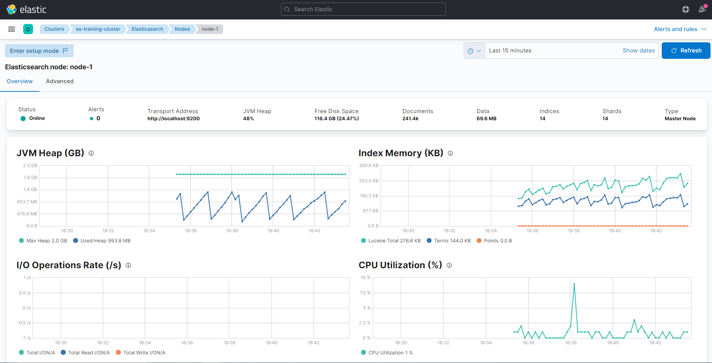

8 Monitoring
Monitoring pane:

Monitoring pane indicates no monitoring setup yet

Download Metricbeat https://www.elastic.co/downloads/beats/metricbeat
Extract Metricbeat in the Home Directory

We first change the configuration of Metricbeat
Open Powershell tab:

In Powershell, we will install Metricbeat

Install the x-pack module
Start Metricbeat

Once Metricbeat starts working for the current instance, we will get the message in Kibana:

Metricbeat open Stack Monitoring

Metricbeat node 1

Metricbeat multiple indices
8.1 Diagnosing Performance Issues
First we will change the index by adding an extra replica

Find out the thread pool:

Check out the status for the thread pools:

Pretty print thread pool:
Get current tasks:
Get the specific nodes: